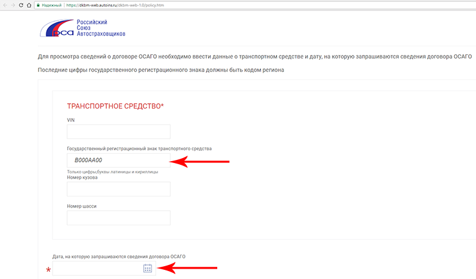
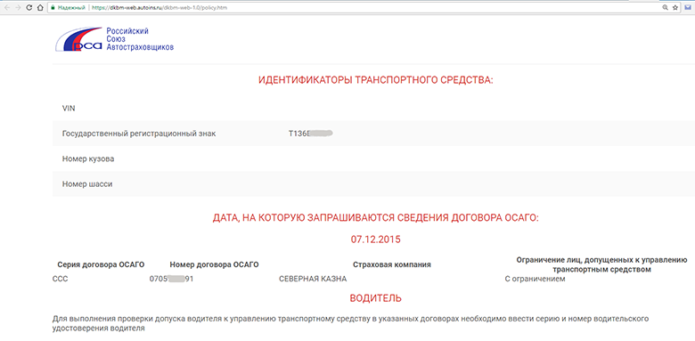
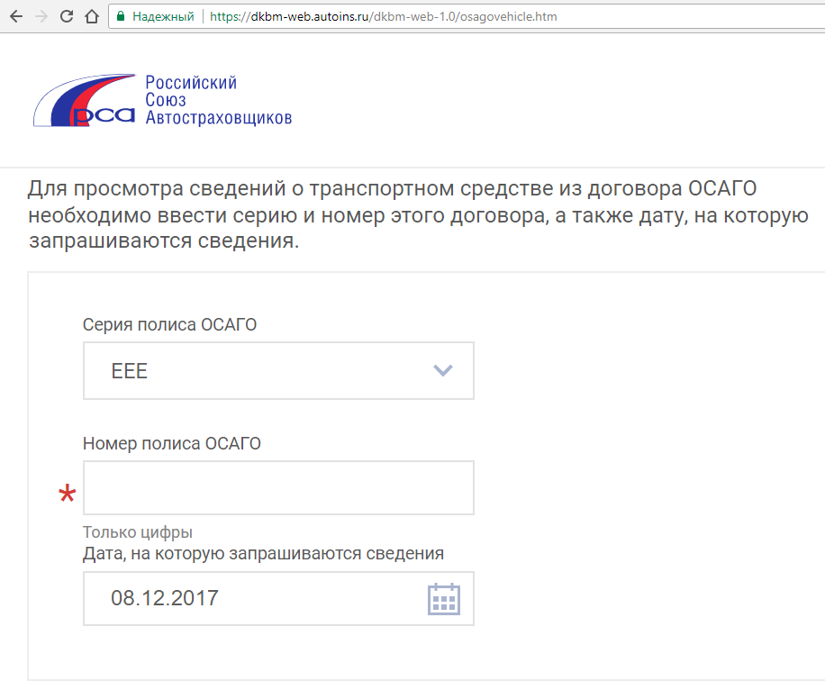
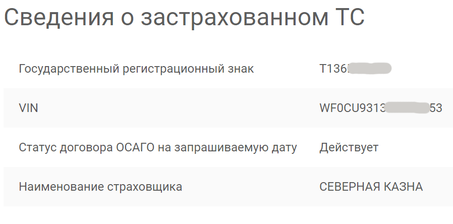
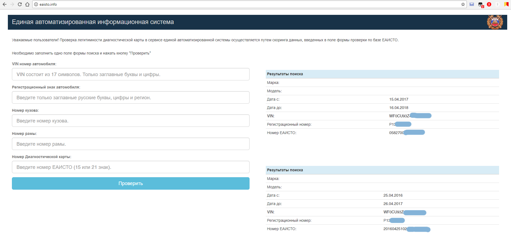
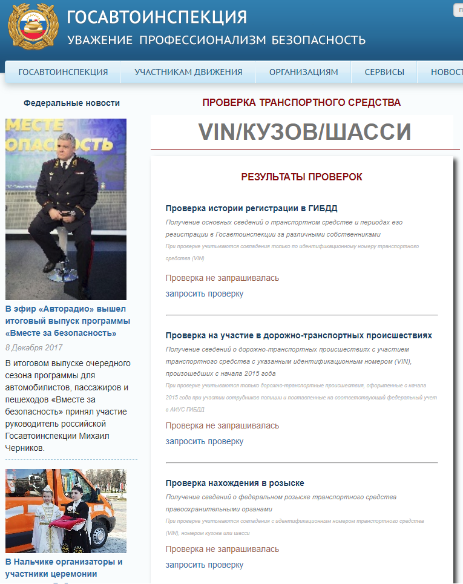
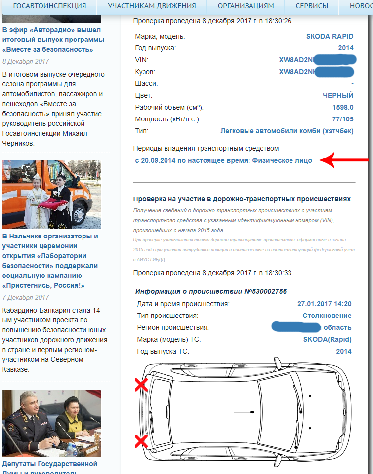
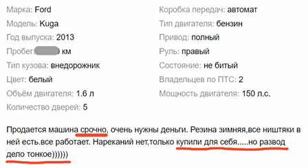
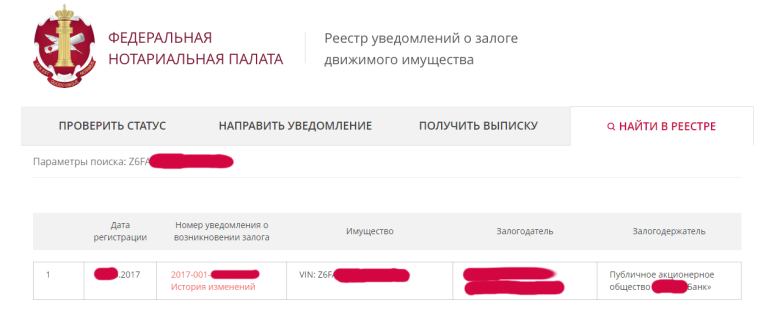

Согласно данным аналитического агентства «АВТОСТАТ», по итогам октября 2017 года объем рынка легковых автомобилей с пробегом в России составил 473 тыс. единиц, а по итогам 10 месяцев 2017 года — около 4,4 млн единиц, что на 1,5% больше, чем год назад.
Источник: www.autostat.ru/press-releases/32145
Ни для кого не секрет, что в этой доходной сфере помимо добросовестных продавцов попадаются мутные товарищи, а иногда и отъявленные мошенники. Любовь наших сограждан к халяве и правовые особенности владения транспортными средствами оставляют множество возможностей для желающих несправедливо получить золото семейного запаса обычных российских граждан.
Однако, благодаря некоторым усилиям государственных органов и прочих организаций у нас появилась возможность довольно оперативно собирать интересующую информацию о конкретных автомобилях по открытым источникам в Интернете. Как делать это быстро и бесплатно, мы постараемся рассказать в этой статье.
Чтобы собрать всю доступную информацию о транспортном средстве, нужно знать его vin-номер. VIN или идентификационный номер транспортного средства (англ. Vehicle identification number) — уникальный код транспортного средства, состоящий из 17 символов. В коде представлена информация о производителе и характеристиках транспортного средства, и годе выпуска. Структура кода основана на стандартах ISO 3779-1983 и ISO 3780. Идентификационные номера наносятся на неразъемных составляющих кузова или шасси и на специально изготовленных номерных табличках (шильдиках).
Несколько исключений из правил для VIN
У автомобиля может быть два разных VIN
Лучше объяснить на конкретном примере
На Kia Sportage 3 «производства» г. Калининград словацкий VIN выбит в окошке под лобовым стеклом со стороны водителя и под передним пассажирским сидением на металле, а российский VIN — на алюминиевой табличке, приклепанной к правой стойке кузова. При постановке на учет используется российский VIN, но словацкий VIN также вносится в «особые отметки» Свидетельства о регистрации ТС. Если автомобиль корейской сборки, то VIN один.
Важно, что это исключение лишь подтверждает существование правила: на всех местах нанесения VIN автомобиля должен быть одинаковым и проверить нужно их все.
Места нанесения у производителей автомобилей различаются, к примеру VIN под лобовым стеклом может отсутствовать или наоборот, дополнительно он будет выбит в багажнике. К счастью, практически для каждой популярной модели авто есть свой интернет-форум владельцев, где каждый желающий сможет узнать всю необходимую информацию.
Несколько мест, где производитель может указать VIN
У автомобиля может не быть VIN
С 10 июля 2017 года ГИБДД будет по-новому регистрировать машины с поврежденными VIN-номерами. Отныне разрешается ставить на учет машины «с измененной маркировкой транспортных средств и номерных агрегатов в результате естественного износа, коррозии, ремонта или возвращенных собственникам, или владельцам после хищения, при условии их идентификации». Теперь, согласно, разъяснениям полиции, чтобы узаконить исчезнувший (например, из-за ржавчины) номер, автовладельцу придется пройти экспертизу по идентификации транспортного средства. И на основании полученного заключения, а также постановления об отказе в возбуждении уголовного дела, ГИБДД вносит в регистрационные данные пометку, что VIN-номер у машины утрачен.
Процедура долгая. По рыночной цене такой автомобиль продать будет существенно сложнее. Риск может быть оправдан для покупателя предоставленной ему большой скидкой, но при этом всё ещё может обернуться серьезными проблемами.
Так как из-за изменений, внесенных в приказ МВД России от 24 ноября 2008 г. N 1001 «О порядке регистрации транспортных средств» приказом МВД РФ от 7 августа 2013 г. N 605, смена владельца автомобиля стала возможной без снятия с учета. Покупатель подержанного автомобиля уже после того, как купил автомобиль и отдал деньги, должен самостоятельно ставить ТС на учёт в связи со сменой собственника.
Данный документ упраздняет понятие «снятия с учета» и заменяет его на «изменение регистрационных данных». В некоторых случаях подобное упрощение процедуры приводит к тому, что покупатель остается без денег и с автомобилем, который он не сможет зарегистрировать на себя в установленном порядке или сможет, но со значительными потерями денег и времени.
Именно поэтому рекомендуется проверять автомобиль перед покупкой. О том, как это сделать с помощью открытых данных через Интернет, расскажем далее.
Узнаем VIN по фотографии
На популярных сервисах для размещения объявлений о продаже авто многие продавцы оставляют номерные знаки машин на фотографиях открытыми. Это позволяет бесплатно узнать vin автомобиля, не тратя время на переписку с продавцом.
1 способ
В этом случае поможет сервис для просмотра сведений о договоре ОСАГО на сайте Российского Союза Автостраховщиков.
РСА является некоммерческой корпоративной организацией, представляющей собой общероссийское профессиональное объединение, основанное на принципе обязательного членства страховщиков, осуществляющих обязательное страхование гражданской ответственности владельцев транспортных средств, и действующее в целях обеспечения их взаимодействия, формирования и контроля исполнения правил профессиональной деятельности при осуществлении обязательного страхования, а также в целях обеспечения проведения технического осмотра транспортных средств в соответствии с законодательством Российской Федерации.
Простой алгоритм действий:
Возможно, получится так, что у продаваемого автомобиля срок действия полиса закончился несколько месяцев назад. Поэтому, если вы увидите фразу
«Сведения о договоре ОСАГО с указанными реквизитами не найдены, но это не является основанием для отказа в получении выплаты»,
просто выберите дату в прошлом. Иногда потребуется вернуться назад в календаре на несколько месяцев или даже лет. В таких случаях у покупателя уже должен появиться вопрос о том, по какой причине автомобиль не использовался, или сделаны выводы о риск-аппетите текущего собственника ТС.

В нашем случае автомобиль попался «потенциально проблемный», и действующий полис мы нашли только в 2015 году. В итоге мы получили серию и номер договора ОСАГО. Часть цифр затёрта только для того, чтобы не привлекать излишнего внимания к конкретным автомобилям, на практике эти данные являются открытыми.

Заполняем форму:

На выходе получаем нужный нам идентификационный номер ТС (VIN), который позволит собрать большую часть нужной информации.

2 способ
Более быстрым является способ получения VIN из сервиса проверки техосмотра (диагностической карты) по официальной базе ЕАИСТО ГИБДД eaisto.info
Создан он для проверки легитимности диагностической карты в сервисе путем скоринга данных, введенных в поле формы проверки по базе ЕАИСТО (достаточно ввести гос. номер). То есть, такая процедура полезна даже для тех, кто не собирается продавать автомобиль, чтобы проверить не поддельный ли талон техосмотра вам выдали.

До чего дошла Госавтоинспекция
26 июня 2016 года к 80-летию ГИБДД запущена обновленная версия сервиса проверки транспортных средств. Отныне все желающие могут проверить на сайте ГИБДД историю автомашины, которая их заинтересовала.
На сайте Госавтоинспекции достаточно ввести VIN автомобиля и можно будет узнать обо всех дорожно-транспортных происшествиях с его участием, о нахождении того или иного автомобиля в розыске и о наличии ограничений на его регистрацию, а также историю регистрационного учета машины.
Сервис не только отобразит информацию об участии автомобиля в ДТП, но и схематично покажет сведения о наиболее значимых механических повреждениях, полученных в них. Никаких персональных данных о собственнике или владельце машины не публикуется.

К сожалению, временами сервер становится недоступен, к примеру, эта публикация была отложена именно из-за сбоя в его работе, который длился почти сутки. Возможно, ведомству стоит рассмотреть вопрос о переносе этого сервиса в защищенное облако на основе IaaS платформы, аттестованной по требованиям безопасности информации и с использованием сертифицированных ФСТЭК и ФСБ средств защиты. Это позволяет размещать Государственные информационные системы (ГИС), к которым предъявляются наивысшие требования по защите информации. При этом провайдер будет гарантировать уровень доступности услуг — обычно от 99,95% в месяц.
Мы проверили несколько объявлений, выбранных случайно. Вот, что удалось узнать, не выходя из дома и не тратя время на дорогу.
Закономерность №1. Характеристика “битый/не битый» заполняется продавцами в соответствии с текущим состоянием
Как правило, продавец укажет, что автомобиль битый только в случае, если автомобиль продается в сильно поврежденном состоянии и для его эксплуатации требуется ремонт. Если было слабое столкновение или даже серьезная авария, но автомобиль восстановлен, по мнению продавца, — он не битый.
Понять стоит ли ехать на осмотр автомобиля и где смотреть особенно тщательно, в списке на сайте gibdd.ru поможет проверка на участие в дорожно-транспортных происшествиях.

При этом нужно знать об особенностях:
Подробнее nbiservice.com/images/Pictures-Preza/AIUS_GIBDD/__.pdf
По причине этих особенностей проверка по базам – это необходимая, но недостаточная мера для гарантированной успешности покупки подержанного авто.
Закономерность №2. Срочная продажа – признак опасности
Для примера рассмотрим одно из объявлений с акцентом на «срочность».

Логично использовать сервис для получения информации о нахождении транспортного средства в залоге. Проверить транспортное средство на предмет обременения можно, воспользовавшись сервисом Федеральной нотариальной палаты www.reestr-zalogov.ru/state/index#
Узнав VIN по номеру с регистрационного знака с помощью сервисов, описанных ранее, вводим его для получения сведений в реестре ФНП.

Машина оказывается имуществом в залоге. Не утверждая ничего о конкретном случае, подобная ситуация может иметь два пути развития:
О том, какой вариант наиболее вероятен, каждый может решить на основе собственного опыта, интуиции и логики. Кроме залоговых автомобилей потенциально опасными являются покупка автомобиля, продаваемого по доверенности и автомобиля с прекращенной регистрацией.
После того, как вы узнаете ФИО продавца, вы сможете проверить владельца по судебным делам с помощью Сервиса Федеральной службы судебных приставов— fssprus.ru/iss/ip
Сервис ФССП показывает только дела, по которым уже ведется судебное производство.
Проверку рекомендуется проводить по всем территориальным органам ФССП России.
Заявления о срочности и некоторая нервозность продавца должны быть для покупателя сигналами об опасности. На рынке недвижимости известны случаи, когда квартира продавца, желавшего закрыть сделку как можно быстрее, в день оплаты оказывалась в аресте. При этом, в ходе предварительной проверки перед выходом на сделку по тем же базам всё «было чисто».
Учитывая стоимость некоторых автомобилей сравнимую с ценой квартир, рекомендуем производить повторную и максимально полную проверку перед передачей оплаты.
Дополнительные сервисы для проверки с дублирующей или некритичной информацией:
Нужны ли платные сервисы?
Сервис проверки на сайте gibdd.ru естественно бесплатный. Честный продавец не станет скрывать от вас сведения о vin номере, поэтому получить всю описанную выше информацию можно без финансовых затрат.
Мотивация продавцов, закрывающих номер регистрационного знака авто, в основном сводится к повторению этого действия по примеру других. Изначально в основном это делали автосалоны и так называемые «перекупщики». Видя, что знаки закрыты у многих, некоторые владельцы авто поступают также. Но многие по-прежнему этого не делают, и именно о приобретении авто у реального собственника мечтает большая часть покупателей. Поэтому описанный способ получения vin с помощью номера регистрационного знака на фотографии является полезным и экономящим время.
Далеко не все люди являются опытными пользователями Интернета и способны без затруднений путешествовать по ссылкам, описанным выше, с целью получить желаемую информацию. Для решения этой проблемы были созданы платные сервисы, формирующие сборные отчёты по клику. Мы проверили всего один отчет подобного сервиса, и к сожалению, так совпало, что в отчёте была обнаружена «неточность».
По данным сервиса, третий владелец является последним в настоящее время и смены собственника больше не происходило. Этот же запрос на сайте Госавтоинспекции даёт более полную информацию и позволяет понять, что собственник снял автомобиль с учёта более полугода назад и сейчас автомобиль по сути является недвижимостью. Продавец в общении объяснил этот факт тем, что приобрёл автомобиль и не поставил его на учёт. Действительно ли он ездил на незарегистрированном авто? Может ли быть так, что транспортное средство долгое время находилось в ремонте по причине незарегистрированной аварии? Догадаться можно только при осмотре.
Минимальные проблемы для покупателя заключаются в том, что по истечению 10-дневного срока владелец незарегистрированного авто будет привлечен к административной ответственности – штраф 1500 — 2000 рублей для граждан. Кто-то этот штраф должен будет оплатить, а также возможно, и другие штрафы, полученные за время пока машина не стояла на учёте.
Более серьезные проблемы могут возникнуть в случае, если регистрация прекращена в связи с утратой транспортного средства после аварии или по другой причине: после похищения автомобиля, при сдаче машины в утиль и так далее.
Каким-то образом копировать отчет или его часть с целью предоставлять третьим лицам, то есть, например, читателям Хабра, мы не можем по условиям пользовательского соглашения с сервисом. Без доказательств было бы неправильно называть этот сервис, однако, стоит отметить, что подобная ошибка может привести покупателя к опасной сделке, а использование платного сервиса может быть воспринято им как достаточная мера должной осмотрительности. Разбираться с убытками покупатель будет самостоятельно, так как по условиям этого же соглашения ответственность за устаревшую или неполную информацию сервис не несёт. Хотя скорее это ошибка в логике формирования отчёта, так как данные в нашем случае устарели бы ещё полгода назад.
Вывод
Средства, потраченные на покупку подержанного авто, могут быть результатом сбережений нескольких лет. Очевидно, что приобретение автомобиля с рук — ответственный поступок. Он требует обдуманных решений, принятых исходя из фактов, полученных из проверенных источников с пониманием их специфики, а не только на основе слов продавца. Хорошо, если эта статья поможет кому-то не отправиться на осмотр автомобиля в тёмное время суток по причине того, что продавцу срочно нужны деньги и он хочет продать небитый автомобиль гаражного хранения за половину цены.
Задача IT-отрасли — облегчить этот процесс для обычных граждан путём автоматизации и повышения доступности данных, но без нарушения прав и свобод человека при обработке его персональных данных.